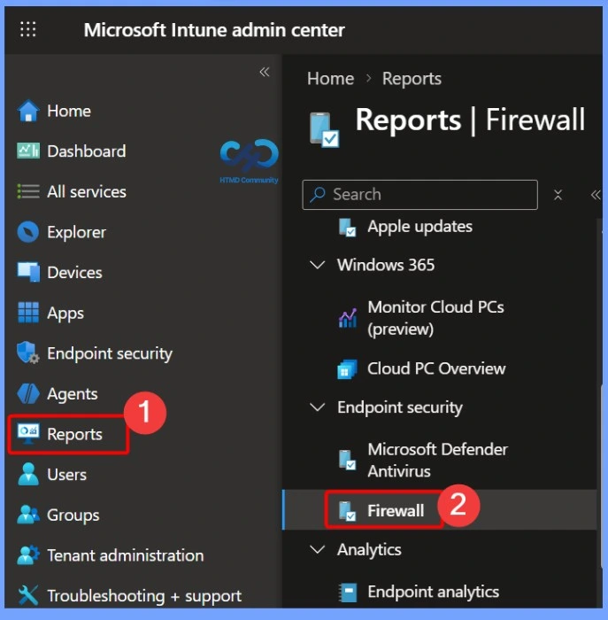
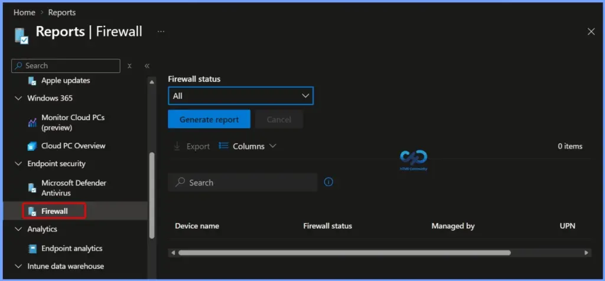
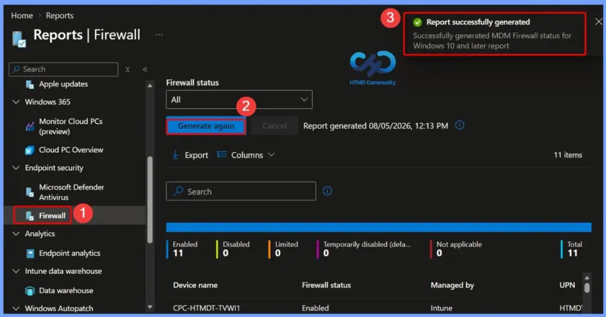
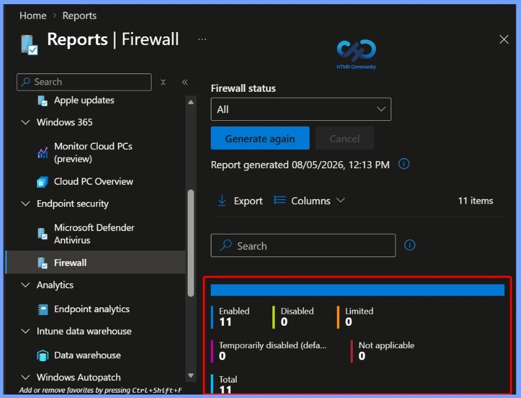
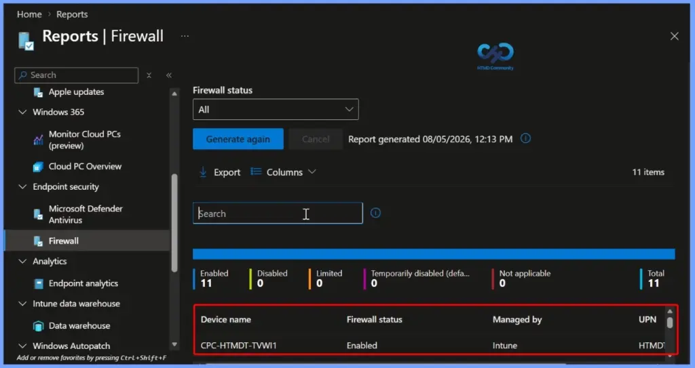
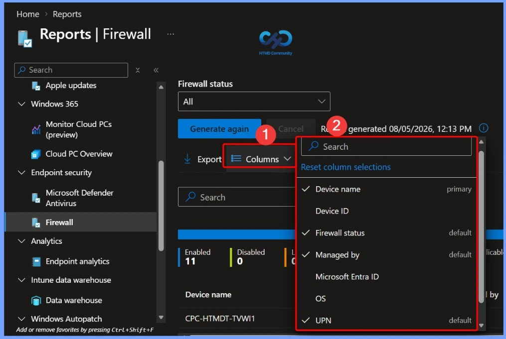
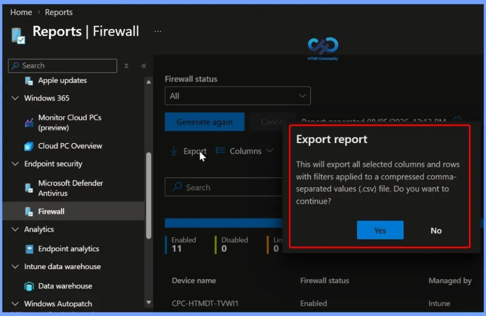
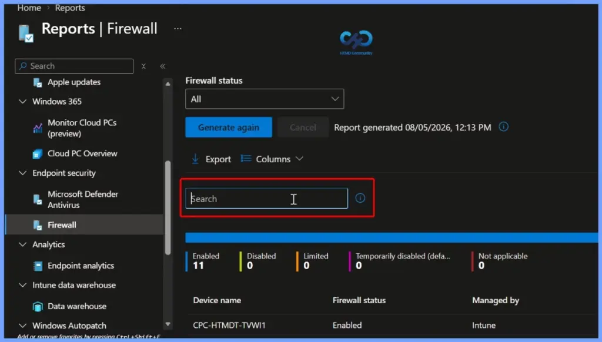
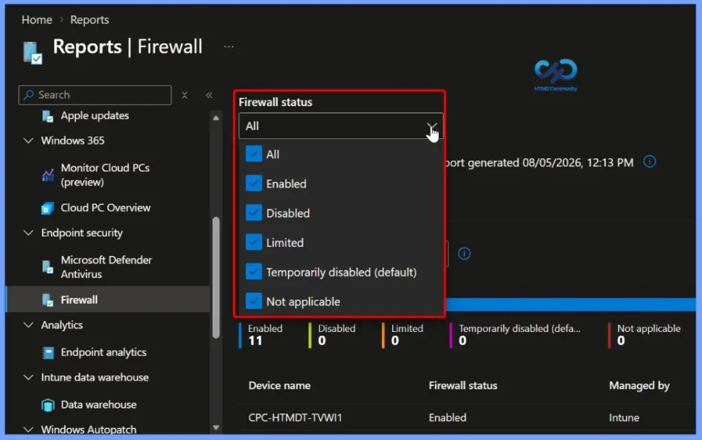
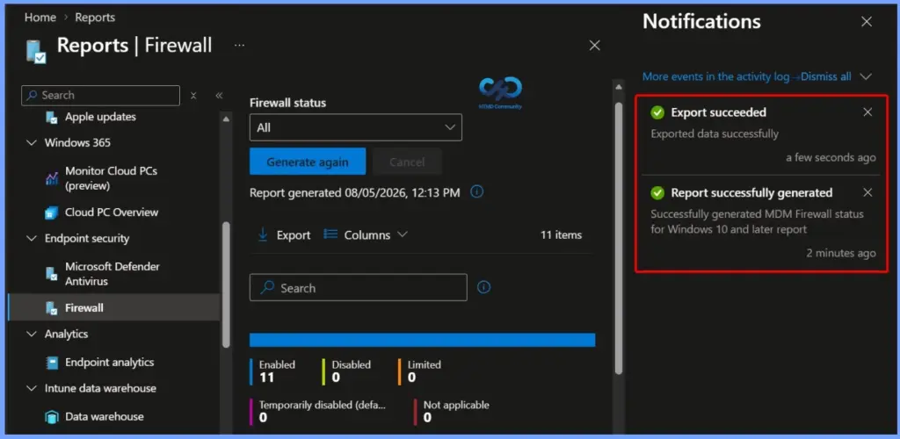

Key Takeaways
- Displays the overall firewall status of all Intune-managed Windows devices in your organization.
- The report collects firewall status information directly from the Windows DeviceStatus CSP, ensuring accurate device reporting.
- Devices are categorized as Enabled, Disabled, Limited, Temporarily Disabled, or Not Applicable to help identify security issues quickly.
- You can filter the report by one or more firewall status categories, making it easier to find devices that require attention.
- Administrators can quickly identify devices with disabled or limited firewall protection and take corrective actions to maintain organizational security.
Microsoft Intune Firewall Status Report to Monitor and Verify Firewall Policies! The MDM Firewall Status for Windows report in Microsoft Intune provides a centralized view of the firewall status across all managed Windows devices. The report collects data through the Windows DeviceStatus CSP and helps administrators verify whether the Windows Firewall is enabled and functioning correctly on enrolled devices.
Table of Content
Microsoft Intune Firewall Status Report to Monitor and Verify Firewall Policies
The report classifies devices into different firewall states, including Enabled, Disabled, Limited, Temporarily Disabled, and Not Applicable. You can also filter the report by these status categories to quickly identify devices with firewall issues. This makes it easier to troubleshoot security problems, improve compliance, and ensure that devices remain protected by the organization’s firewall policies.
- The MDM Firewall Status for Windows report provides a high-level overview of the firewall status for your Intune-managed Windows devices.
- To access this report, sign in to the Microsoft Intune admin center.
- Navigate to Reports > Firewall > MDM Firewall status Report
- Use this report to monitor the firewall health of managed Windows devices across your organization.

Firewall Status Reporting and Filtering
The MDM Firewall Status for Windows report collects firewall information from managed devices using the Windows DeviceStatus CSP. It provides the current firewall status for each device and allows you to filter the report by one or more status categories.

Generate the MDM Firewall Status Report
After selecting the MDM Firewall Status for Windows report, click Generate again to refresh the report with the latest firewall status information from your managed devices. Once the report is generated successfully, a confirmation message appears, and the dashboard displays the current firewall status for all devices.
- Report Successfully generated
- Successfully generated MDM Firewall status for Windows 10 and later report

Firewall Status Summary
The Firewall Status section provides a quick overview of the firewall health across all Intune-managed Windows devices. This summary helps administrators quickly identify devices with firewall issues and prioritize troubleshooting to ensure all managed devices remain protected.
| Enabled | Disabled | Limited | Temporarily disabled | Not applicable | Total |
|---|---|---|---|---|---|
| 11 | 0 | 0 | 0 | 0 | 11 |

Device-Level Firewall Status Details
The Device Details section lists the firewall status for each Intune-managed Windows device. It includes important information such as the Device Name, Firewall Status, Managed By, and User Principal Name (UPN). You can use the search box to quickly locate a specific device and review its current firewall state.

Customize Report Columns
The Columns option lets you customise the information displayed in the MDM Firewall Status for Windows report. Click Columns to open the column selection pane, where you can search for available fields and choose which columns to display.
| Columns |
|---|
| Device name Device ID Firewall status Managed by Microsoft Entra ID os UPN User name |

Export the Firewall Status Report
The Export option allows you to download the MDM Firewall Status for Windows report as a CSV (.csv) file for offline analysis and reporting. When you click Export, Intune exports all the currently selected columns and rows, including any applied filters, into a compressed CSV file.

Search for a Specific Device
The Search box helps you quickly find a specific device in the MDM Firewall Status for Windows report. Simply enter a device name or other available details to filter the results and display matching devices. This feature makes it easier to locate individual devices, verify their firewall status, and troubleshoot firewall-related issues without manually reviewing the entire report.

Firewall Status Categories
The MDM Firewall Status for Windows report classifies devices into different firewall status categories based on the information collected from the Windows DeviceStatus CSP. These status values help administrators quickly understand the firewall health of managed devices and identify systems that may require attention or troubleshooting.
- Enabled – The firewall on, and successfully reporting.
- Disabled – The firewall is turned off.
- Limited – The firewall isn’t monitoring all networks, or some rules are turned off.
- Temporarily Disabled (default) – The firewall is temporarily not monitoring all networks
- Not applicable – The device doesn’t support firewall reporting.

Report Generation and Export Notifications
The Notifications pane displays the status of report-related activities in the Microsoft Intune admin center. After you generate or export the MDM Firewall Status for Windows report, Intune shows a notification confirming whether the operation completed successfully.

Need Further Assistance or Have Technical Questions?
Join the LinkedIn Page and Telegram group to get the latest step-by-step guides and news updates. Join our Meetup Page to participate in User group meetings. Also, join the WhatsApp Community and the Whatsapp channel to get the latest news on Microsoft Technologies. We are there on Reddit as well.
Resources
Author
Anoop C Nair is a Workplace Technology solution architect with 25+ years of experience. Microsoft Certified Trainer. Microsoft MVP from 2015 onwards for consecutive 11+ years! He is a blogger, Speaker, and Founder of HTMD Community and HTMD Conference. His main focus is on Device Management technologies like Intune, Windows, and Cloud PC. He writes about technologies like Intune, SCCM, Windows, Cloud PC, Entra, and Microsoft Security.